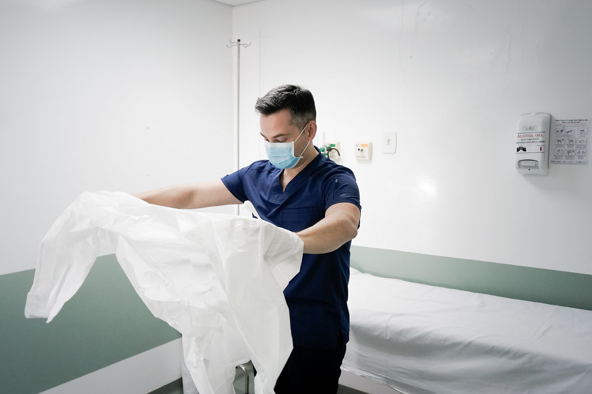
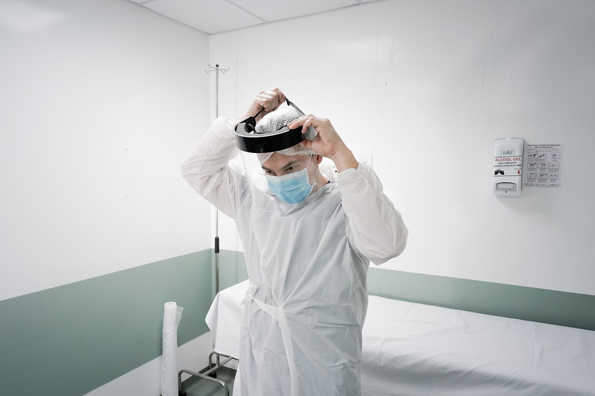

(Fotos: Ricardo Wolffebüttel/SECOM)
Quando autoridades de saúde no mundo todo recomendaram que as pessoas ficassem em casa para evitar o contágio pelo novo coronavírus, o médico infectologista Marcos Paulo Guchert não teve essa opção. Ele faz parte do grupo de profissionais que estão na linha de frente do combate à Covid-19, trabalhando incansavelmente para salvar vidas.
Conviver tão próximo da ameaça do vírus provocou mudanças profundas na rotina do médico, esposo e pai de dois filhos. Durante o trabalho em Florianópolis, a cautela com a higiene e a vestimenta foi reforçada para evitar a contaminação. Ao fim do expediente, começa uma série de outros procedimentos para não levar o vírus para quem está em casa.
“É uma doença nova e temos que ter todo o cuidado seja no tratamento dos pacientes ou na nossa rotina de prevenção. Por estar na linha de frente, meu maior medo é contaminar quem eu amo. Isso pesa e gera ansiedade porque ninguém está livre da doença”, explica.
Guchert revela que está afastado da maioria dos familiares. Em casa, para conviver com a mulher e os filhos, cumpre todos os protocolos sanitários recomendados para diminuir o risco de contágio.
“Não tenho a opção de ficar em casa, escolhi trabalhar nesta área essencial e sei que neste momento preciso me manter firme. Como estou para os meus, tenho que estar disponível e preparado para tratar de quem precisar”, afirma o médico.
Por mais desafiador que seja o momento da trajetória profissional, é na relação com os pacientes que o médico diz encontrar forças para continuar cumprindo com sua missão. “A recompensa é olhar no olho do paciente e levar esperança. É a gratidão de ver alguém que sai curado e vai poder voltar para a sua família. É por isso que continuamos lutando”, reforça.
Depois de seis meses de trabalho na linha de frente da pandemia, o médico Marcos Guchert revela que o cansaço e o desgaste emocional também se acumulam. “É cansativo e ainda não sabemos quão longe está o fim desta situação. Vai depender das pesquisas, da vacina e da capacidade da indústria em fornecê-la”, pontua.
E até a vacina chegar, a rotina continuará exigindo esforços. O médico pede que as pessoas continuem se cuidando e cumpram, principalmente, as medidas de distanciamento social. “Estamos cansados, mas não é hora de afrouxamento. Enquanto a vacina não chegar, estaremos, todos, expostos a esta doença, que, para uns, poderá ser leve e para outros poderá ser muito grave. É fundamental que o sistema de saúde esteja preparado para atender a todos”, alerta Guchert.
Em Santa Catarina, são 1.552 leitos de UTI pelo Sistema Único de Saúde (SUS), dos quais 972 estão ocupados, sendo 346 por pacientes com confirmação ou suspeita de Covid-19. A ocupação é de 62,6% e há 580 leitos vagos. Ninguém morreu por falta de vagas no estado.
Diante de tudo o que está vivendo, tem algo que faz o médico renovar as forças como profissional e como ser humano. “Eu chego em casa e, antes mesmo de ter o contato com a minha família, naquele momento em que estou finalizando um dia de trabalho, eu faço a reflexão de que estou dando o meu melhor todos dias e me sinto realizado com isso”, conclui o médico.
Assim como Marcos Guchert, centenas de médicos, enfermeiros, técnicos de enfermagem, auxiliares de limpeza e outros colaboradores estão nos hospitais trabalhando incansavelmente. Com dedicação e profissionalismo eles estão ajudando a salvar vidas em Santa Catarina, que tem a menor taxa de letalidade do país.

A escola vai até os alunos para levar conhecimento e carinho

Mais de 500 mil produtores rurais se adaptam para garantir o cultivo

Catarinenses superam a Covid-19 e fortalecem laços

Empreendedores se adaptam e Governo auxilia empresas a atravessarem momento desafiador
A rotina de quem se dedica a salvar vidas em meio à pandemia